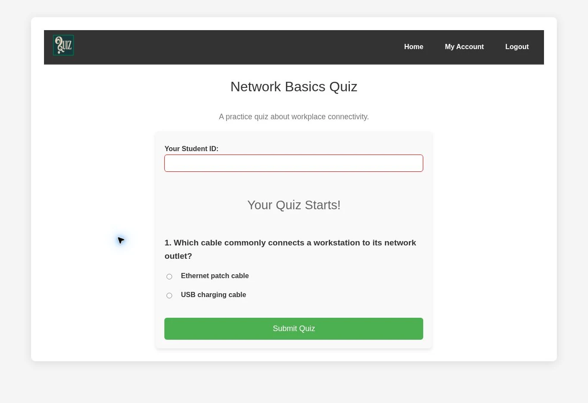
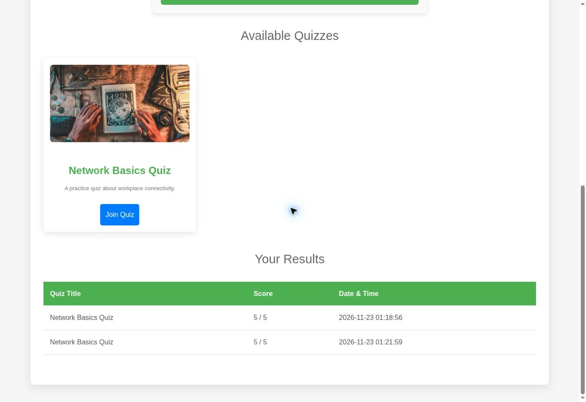

Team web project · 2025
Quiz Web Project
I designed Quiz Web Project in 2025 so authors could write quizzes and participants could track their scores. I led the team and used AI coding tools to develop the application from my original idea.
- Year
- 2025
- My role
- Project lead, designer, and developer
- Built with
- PHP, MySQL, and JavaScript
 Enlarge image
Enlarge imageDesigning for the author and the participant
I planned two connected workflows. Authors needed a way to define questions, choices, and points. Participants needed a simple form for answering them and a place to find their scores afterwards. I used AI coding tools and refined the implementation through successive prompts.
The life of one question
Step 1 of 4
Give the question a point value
I designed the authoring flow so the quiz, its questions, and their choices can be saved separately. The author marks the correct choice and sets the number of points.
- QuizCreate the assessment.
- QuestionWrite the prompt and assign points.
- ChoicesEnter the options and identify the correct one.
Step 2 of 4
Choose an answer as a participant
A participant opens the quiz and selects an option. In this example, the question asks which cable commonly connects a workstation to its network outlet.


Enlarge imageStep 3 of 4
Calculate the score in PHP
The server checks the selected option against the correct answer for that question. A match earns the points the author assigned, which are added to the attempt’s total.
- SubmissionRead the selected option.
- ComparisonCheck the option for this question.
- TotalAdd the points for a correct answer.
Step 4 of 4
Keep every attempt
I made each submission a new result record. The participant’s account can show more than one score for the same quiz.


Enlarge imageKeeping questions and attempts separate
I stored quiz definitions, questions, and answer options separately from results. A result points to the quiz and participant, so a new attempt can be added while the assessment remains available to the next person.
Why the sample answer earns five points
The author gave the networking question five points and marked “Ethernet patch cable” as correct. Selecting it earns 5/5 on this one-question quiz. The two attempts in the screenshot come from a later demonstration session with a sample account.
Where validation happens
I calculate the score on the server when the participant submits the quiz. The join page also has a live input hint. Its event listener runs before the input is ready, which can stop the hint from appearing. Submitting an answer still records the score.
Contact
Connect with me on LinkedIn or find more of my work on GitHub.